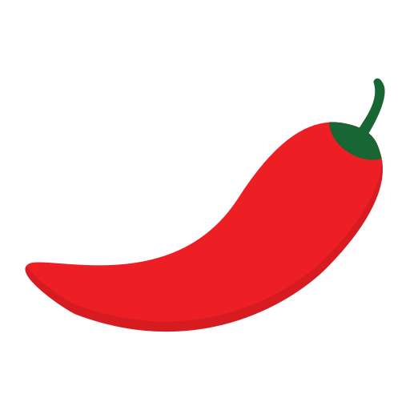
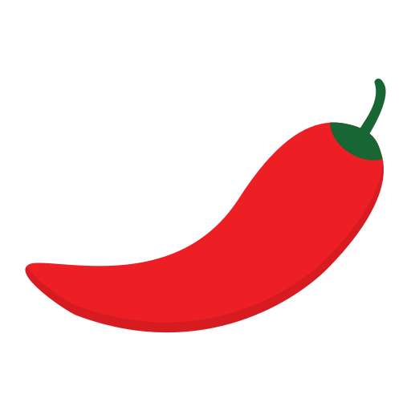

George Town

Here
One of Malaysia's most popular noodle dishes is Asam Laksa, which comes from Penang. The broth has been made with tamarind and mackerel, giving it a unique sour and spicy flavor. Asam Laksa garnished with cucumber, pineapple, onion, mint, and shrimp paste serves up a delightful blast of tastes typical of Malaysian street food.
Watch Video 


Asam Laksa is a dish that reflects Malaysia's Penang history of migration, trade, and cultural fusion. Its origin can be traced back to the Peranakan (Straits Chinese) community which is descended from Chinese immigrants who arrived in the Malay Archipelago centuries ago. These early settlers married into local Malay families, leading to a distinct culture that combined Chinese traditions with Malay language, attire and especially cuisine.Peranakan kitchens were hubs of invention. They mixed Chinese noodles and cooking techniques with native Malay spices, tamarind, herbs, and chilies to create flavors that were strong, sour, and spicy. Asam Laksa was born as the result of this cultural union.
Penang, as a trading port, Asam Laksa is thought to have gained popularity. Traders and travelers from all around Asia brought new ingredients and incorporated into the meal, making it even more complex and deep. Penang Asam Laksa has long been regarded as one of the world's best street meals, because of its unique blend of sour, spicy, and savory flavors.
Asam Laksa can now be found in varied of styles, varying noodles, broths, and toppings depending on the region and cook. However, one things remain constant Asam Laksa is a cultural symbol of Malaysia's rich heritage